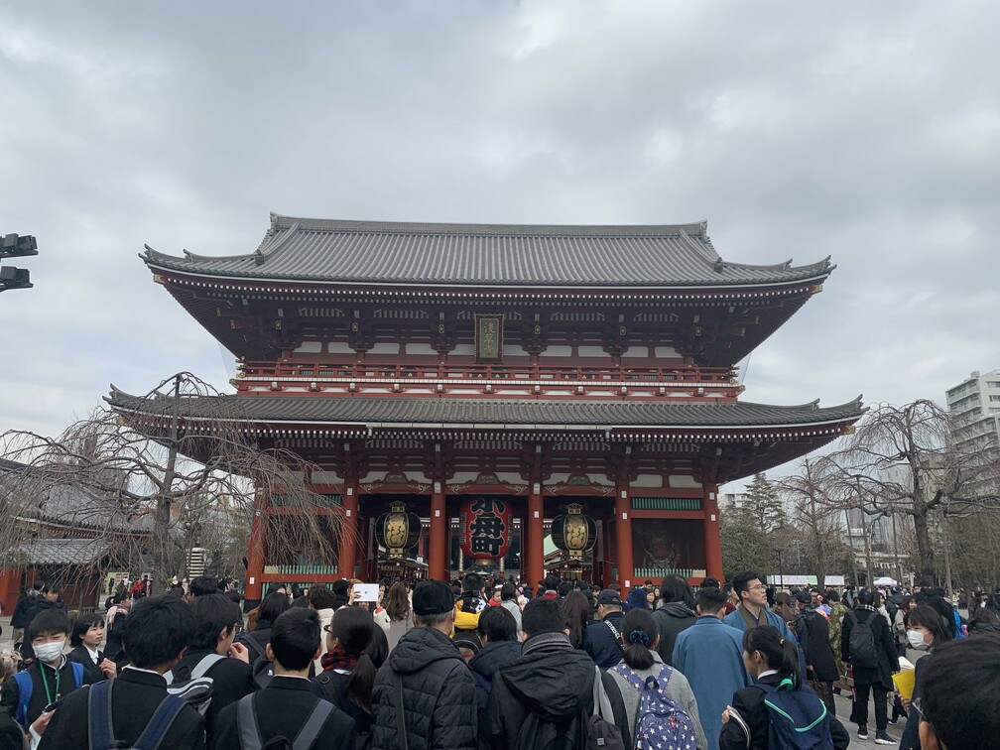
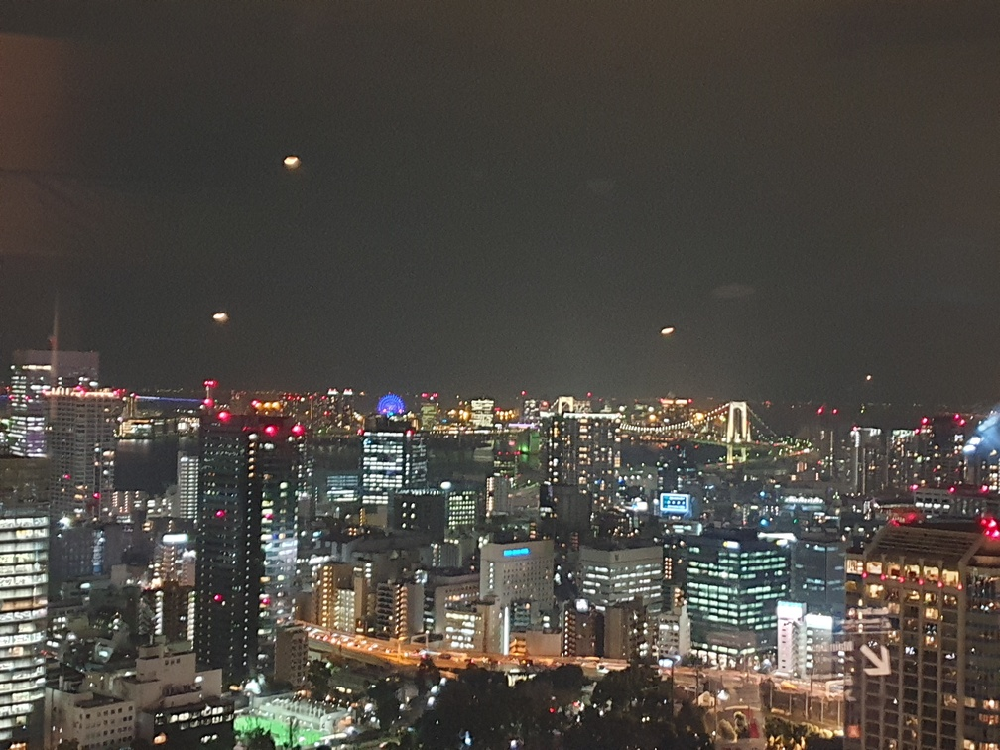

여행 넷째 날 (아사쿠사)

여행 넷째날은 일본의 정취를 맘껏 느낄 수 있는 아사쿠사로 갔다.
아사쿠사엔 도쿄에서 가장 유명하다 할 수 있는 센소지가 있는데 역시 일본의 유명 관광지다보니 평일에도 관광객들이 정말 많아서 혼잡하였다.
절 앞에는 카미나리몬이라는 큰 문이 있는데 큰 등에 번개 전, 문 문 자가 적혀있는것이 인상 깊었고 사진찍는 명소 였다.
문 안으로 들어가니 각종 판매점들이 줄지어 있었다. 그곳에는 기념품,전통의상, 전통악세서리, 전통음식 등등 다양하게 입지해 있었다.
그곳을 빠져나오면 센소지가 나오는데 우리나라절과 비슷하지만 약간 다른 느낌을 받았다. 그곳에는 운세를 뽑는 것이 있었는데 100엔을 양심적으로 넣고 통에서 나무막대기를 흔들어 뽑은뒤 그 숫자에 맞는 종이를 함에서 꺼내 운세를 보는 것이었다. 나도 해보았는데... 중길 이었다.
여행 넷째 날 (스카이트리)
아사쿠사에서 주위를 둘러보면 아주 큰 타워를 볼 수 있는데 그게 바로 스카이 트리다. 멀리서 봐도 아주 높아 보이는 스카이 트리는 세계 1위의 전파송출용 탑이였다. (여담으로 우리는 남산타워와 비교하며 내기를 하였다.)
우리는 아사쿠사에서 보이기에 걸어서 스카이 트리로 향했다.
하지만 가는길은 30분가까이 걸어야 했다. 가는길은 조금 지쳤지만 주위 풍경을 구경하고 떠들면서 가니 금방 도착할 수 있었다.
멀리서 봐도 큰 탑이 점점 가까워지면서 세계1위의 위압을 보여 주었다. 입장료가 비싸서 도쿄 타워에 올라갈 예정이였던 우리는 스카이 트리는 포기하였다. 다시 아사쿠사로와 점심으로 규카츠를 먹었는데 줄이 있어 여기는 무조건 맛집이다 라고 생각하여 30분 가량 기다려서 먹었느데 정말 맛있었다. 일본에서 먹은것중에 탑에 들정도로 아니 여태까지 먹은 음식중 손에 꼽혔다. 나중에 알아보니 유명한 맛집 이였다.ㅎㅎ
여행 넷째 날 (도쿄타워)


점심을 늦게 먹었기 때문에 바로 야경을 보기 위해 도쿄타워로 갔다.
친구가 근데 지도를 살짝 잘못 봐서 역에서 30분을 또 걸어서 도쿄타워에 도착 할 수 있었다. 약간 질책을 하였지만 도쿄 도심 사이를 걸어 볼 수 있어서 좋긴 하였다.
도쿄타워는 확실이 아름다웠다. 우리가 도착 할 때쯤에는 완전이 어두워져
있있고 그래서 도쿄타워는 환하게 빛을 뿜고 있었다. 스카이트리에 요새는 밀리는 추세라고 하지만 실제로 보니 아직까지 왜 일본을 대표하는 렌드마크라고 하는지 알 수 있었다.
우리는 곧장 입장표를 끊고 전망대로 올라갔다. 전망대 도착하니 도쿄의 야경이 눈앞에 한눈에 펼쳐보여졌다. 오전에 보았던 스카이트리와 지난번에탄 관람차도 찾아 볼 수 있었고 정말 말로 표현할 수 없는 절경이 였다. (우스겟소리로 저 불빛들은 일본 직장인들의 야근으로 만들어졌다는 농담을 하였다.)
아무튼 우리는 일본여행의 마무리를 멋지게 지었고
아침 6시에일어나 9시 비행기를타고 한국으로 복귀하였다.~~